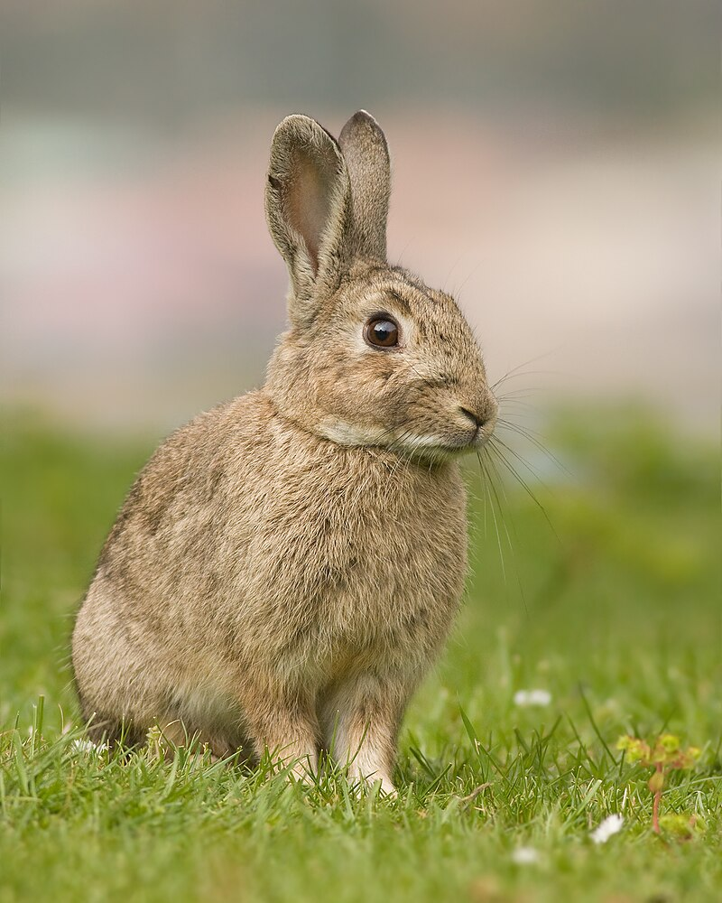
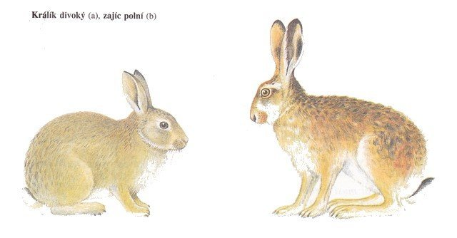

Králík divoký, též králík evropský (Oryctolagus cuniculus) je původně jihoevropský druh králíka. Od středověku žije též na území Česka. Patří mezi lovnou zvěř. Jeho domestikací vznikl králík domácí. Je to jediný zástupce rodu Oryctolagus.

Králík divoký dosahuje délky těla 40–50 cm, ocásek měří asi 6 cm, hmotnost se pohybuje od 1,3 do 2,5 kg. Postavou se podobá zajíci, je však asi o polovinu menší, má kratší uši i končetiny. Nepoměr mezi délkou předních a zadních končetin není tak výrazný jako u zajíce a přední končetiny jsou silnější. Uši králíka měří 6–8 cm a pokud ucho přehneme, nepřesahuje čumák králíka. Uši také nikdy nemají černou špičku. Zbarvení divokého králíka kolísá v odstínech pískové a hnědé, s šedými tóny. Na břiše je světlejší, nápadný je bílý ocásek. Vyskytují se i barevné odchylky, zvláště melanismus. Králice se od samce pozná podle jemnější a kulatěji utvářené hlavy, obvykle bývá menší.
